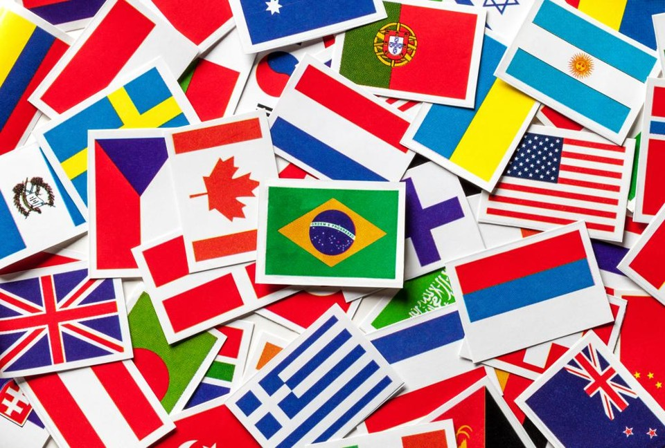

A Copa do Mundo é o maior e mais importante torneio de futebol do planeta. Organizada pela FIFA, a competição reúne as melhores seleções nacionais, que disputam o título de campeã mundial a cada quatro anos. Milhões de torcedores acompanham os jogos, transformando o evento em uma verdadeira celebração do esporte.